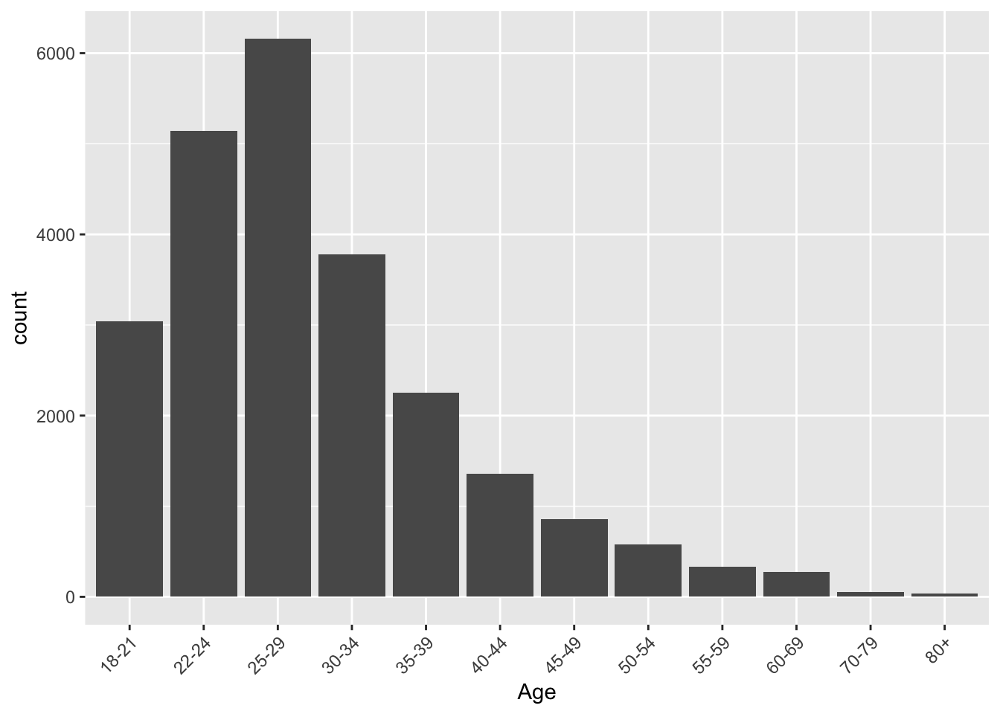
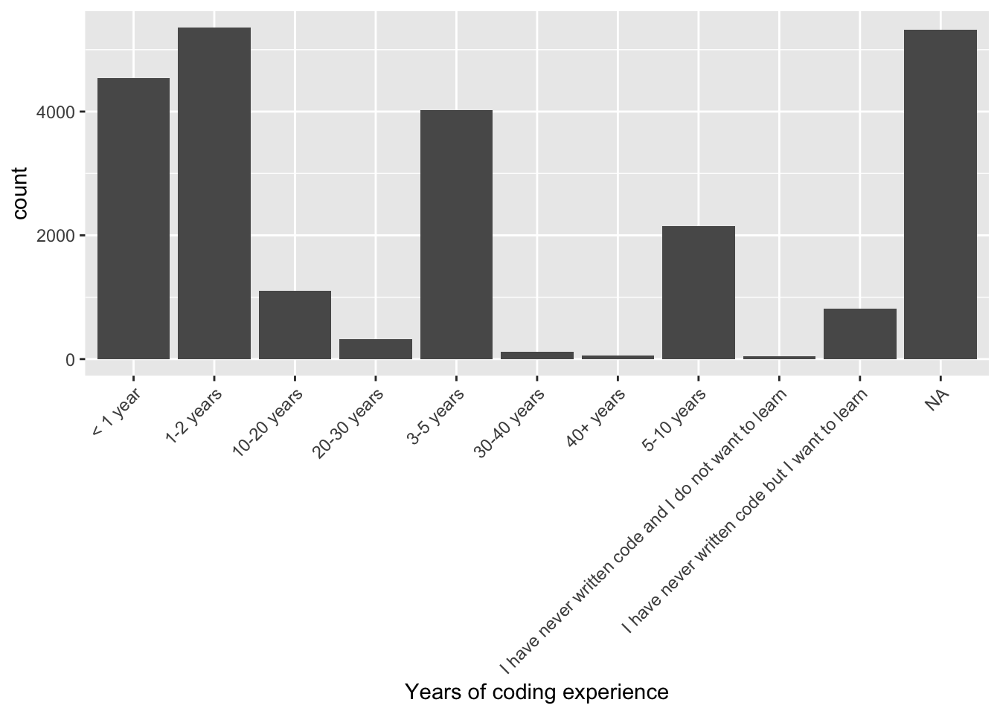
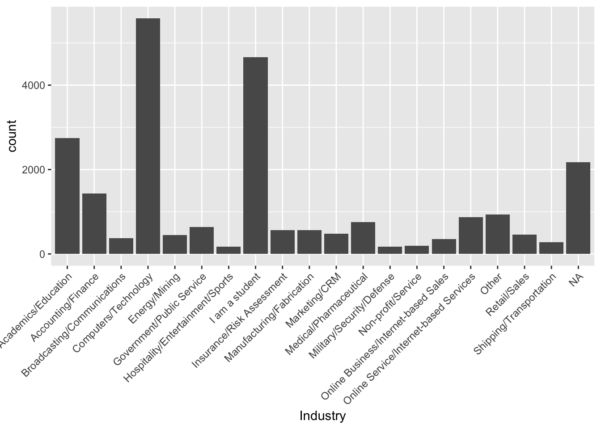
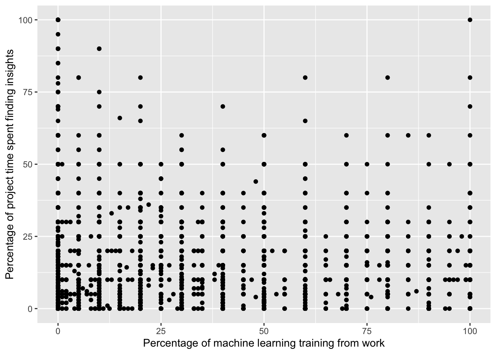

Code
library(tidyverse)
library(ggplot2)
library(dplyr)
knitr::opts_chunk$set(echo = TRUE)Abigail Balint
March 20, 2023
The dataset I am using comes from Kaggle https://www.kaggle.com/datasets/kaggle/kaggle-survey-2018 and is a survey titled “2018 Kaggle Machine Learning & Data Science Survey” conducted by Kaggle to capture the current state of machine learning and data science usage, mainly at the enterprise and academic level. The dataset contains survey responses from almost 24,000 respondents from varying backgrounds. The survey contains 50 questions, including 9 demographic questions and 41 questions around machine learning and data science. The questions range from platforms and products used, and tools and methodology, barriers to entry, and more. It also asks respondents about their employee experience working in these fields. I believe that the wide array of types of questions used make this dataset a good fit for research, as there are binary and categorical variables to explore but also some that ask for explicit numeric values like what percentage of their work falls to different tasks. Having several different types of questions provide opportunities for multiple types of models to be performed.
This survey was also run in 2017, 2019, and 2020 on Kaggle as part of an annual competition where users could submit code and analysis using this public data. However, I decided to use the 2018 dataset as my focus because certain questions that I think would be really interesting to analyze were omitted in later years/the survey was shortened overall. This survey was hosted by Kaggle, open to anyone in the industry, for one week in October 2018.
Reading in the dataset –
Warning: One or more parsing issues, see `problems()` for detailsRows: 23859 Columns: 395
── Column specification ────────────────────────────────────────────────────────
Delimiter: ","
chr (343): Q1, Q2, Q3, Q4, Q5, Q6, Q7, Q8, Q9, Q10, Q11_Part_1, Q11_Part_2, ...
dbl (48): Time from Start to Finish (seconds), Q1_OTHER_TEXT, Q6_OTHER_TEXT...
lgl (4): Q28_Part_24, Q30_Part_15, Q38_Part_19, Q38_Part_20
ℹ Use `spec()` to retrieve the full column specification for this data.
ℹ Specify the column types or set `show_col_types = FALSE` to quiet this message.Warning: One or more parsing issues, see `problems()` for detailsRows: 23859 Columns: 395
── Column specification ────────────────────────────────────────────────────────
Delimiter: ","
chr (343): What is your gender? - Selected Choice, What is your age (# years...
dbl (48): Duration (in seconds), What is your gender? - Prefer to self-desc...
lgl (4): Which of the following machine learning products have you used at...
ℹ Use `spec()` to retrieve the full column specification for this data.
ℹ Specify the column types or set `show_col_types = FALSE` to quiet this message.# A tibble: 10 × 395
Duration (i…¹ What …² What …³ What …⁴ In wh…⁵ What …⁶ Which…⁷ Selec…⁸ Selec…⁹
<dbl> <chr> <dbl> <chr> <chr> <chr> <chr> <chr> <dbl>
1 710 Female -1 45-49 United… Doctor… Other Consul… -1
2 434 Male -1 30-34 Indone… Bachel… Engine… Other 0
3 718 Female -1 30-34 United… Master… Comput… Data S… -1
4 621 Male -1 35-39 United… Master… Social… Not em… -1
5 731 Male -1 22-24 India Master… Mathem… Data A… -1
6 1142 Male -1 25-29 Colomb… Bachel… Physic… Data S… -1
7 959 Male -1 35-39 Chile Doctor… Inform… Other 1
8 1758 Male -1 18-21 India Master… Inform… Other 2
9 641 Male -1 25-29 Turkey Master… Engine… Not em… -1
10 751 Male -1 30-34 Hungary Master… Engine… Softwa… -1
# … with 386 more variables:
# `In what industry is your current employer/contract (or your most recent employer if retired)? - Selected Choice` <chr>,
# `In what industry is your current employer/contract (or your most recent employer if retired)? - Other - Text` <dbl>,
# `How many years of experience do you have in your current role?` <chr>,
# `What is your current yearly compensation (approximate $USD)?` <chr>,
# `Does your current employer incorporate machine learning methods into their business?` <chr>,
# `Select any activities that make up an important part of your role at work: (Select all that apply) - Selected Choice - Analyze and understand data to influence product or business decisions` <chr>, …Upon doing a cursory search around this data, I see some high level executive-summary style research published about this data set, but I wasn’t able to find anything focused on more specific research questions. It was more demographic data of the state of ML and Data Science. I think there is the opportunity to speak more specifically about the state of machine learning and data science, and look deeper at what tools students and employees are using versus what their time is devoted to.
Therefore, my main research question is “What is the state of machine learning and data science? What tools are being used in the context of individuals school and work, and how does an individual’s background (age, career, education, etc.) impact how they navigate this tech world? What barriers do users face and are those barriers the same for all users?”
I plan to use questions like “During a typical data science project at work or school, approximately what proportion of your time is devoted to the following?” or “What percentage of your current machine learning/data science training falls under each category?” to get exact numbers that I can correlate against demos and more general usage of tools and platforms to see if there is any connection between the work one does and the tools they use.
I am interested in this dataset because a lot of research in my career is in the machine learning space, so I am always interested in contextualizing the employee experience in these areas so that I can better understand the subject of some of my survey research. I also do more general employee engagement research in my career and I think this final is a great opportunity to try my hand at some of the correlations I would like to run at my job now but have never been able to because I don’t have any prior stats knowledge.
I would like to test a few different hypotheses that I have. Some of the initial ideas I have currently are:
-Students are more likely to use free, long-standing coding and ML platforms as opposed to employees using more paid tools with user-friendly features.
-For the question “How do you perceive the importance of the following topics? - Fairness and bias in ML algorithms, Being able to explain ML model outputs and/or predictions, Reproducibility in data science”, students will perceive this as more important than full-time workers, and younger generations will perceive this as more important than older generations.
-For the question “During a typical data science project at work or school, approximately what proportion of your time is devoted to the following?” time spent on the analysis end of the process will be reported as a higher percentage of time the older or more experienced the data scientist is.
These are just a few ideas of the direction I am thinking, all of course cut by the demographics in this dataset like age, education, industry, years of experience, etc.
I described my dataset at the top of this as well as discussed variables of interest in the Research Question section, but here is a little bit of exploratory code:
I can see the data contains mostly younger males, but because of the sample size can really work with lots of demographic combinations.

There is also a range of coding experience in the dataset.

The data is split between students, tech industry employees, and other industry employees.

This is just a quick example of the types of thinking I want to do for my final poster. Here, I made a scatterplot showing where the amount of training from work meets the amount of time spent finding insights instead of cleaning data, coding, etc. I expected this to be much higher for those who received most or all of their training from work, but that isn’t the case. I’m interested to see once I define a few more specific hypotheses if they end up being true or false.
Warning: Removed 8114 rows containing missing values (geom_point).
Here is the glimpse function to show essentially the questionaiire in text form. I’m working with the variable codes in my coding and using a key as the codes are much shorter.
Rows: 23,859
Columns: 395
$ `Duration (in seconds)` <dbl> …
$ `What is your gender? - Selected Choice` <chr> …
$ `What is your gender? - Prefer to self-describe - Text` <dbl> …
$ `What is your age (# years)?` <chr> …
$ `In which country do you currently reside?` <chr> …
$ `What is the highest level of formal education that you have attained or plan to attain within the next 2 years?` <chr> …
$ `Which best describes your undergraduate major? - Selected Choice` <chr> …
$ `Select the title most similar to your current role (or most recent title if retired): - Selected Choice` <chr> …
$ `Select the title most similar to your current role (or most recent title if retired): - Other - Text` <dbl> …
$ `In what industry is your current employer/contract (or your most recent employer if retired)? - Selected Choice` <chr> …
$ `In what industry is your current employer/contract (or your most recent employer if retired)? - Other - Text` <dbl> …
$ `How many years of experience do you have in your current role?` <chr> …
$ `What is your current yearly compensation (approximate $USD)?` <chr> …
$ `Does your current employer incorporate machine learning methods into their business?` <chr> …
$ `Select any activities that make up an important part of your role at work: (Select all that apply) - Selected Choice - Analyze and understand data to influence product or business decisions` <chr> …
$ `Select any activities that make up an important part of your role at work: (Select all that apply) - Selected Choice - Build and/or run a machine learning service that operationally improves my product or workflows` <chr> …
$ `Select any activities that make up an important part of your role at work: (Select all that apply) - Selected Choice - Build and/or run the data infrastructure that my business uses for storing, analyzing, and operationalizing data` <chr> …
$ `Select any activities that make up an important part of your role at work: (Select all that apply) - Selected Choice - Build prototypes to explore applying machine learning to new areas` <chr> …
$ `Select any activities that make up an important part of your role at work: (Select all that apply) - Selected Choice - Do research that advances the state of the art of machine learning` <chr> …
$ `Select any activities that make up an important part of your role at work: (Select all that apply) - Selected Choice - None of these activities are an important part of my role at work` <chr> …
$ `Select any activities that make up an important part of your role at work: (Select all that apply) - Selected Choice - Other` <chr> …
$ `Select any activities that make up an important part of your role at work: (Select all that apply) - Other - Text` <dbl> …
$ `What is the primary tool that you use at work or school to analyze data? (include text response) - Selected Choice` <chr> …
$ `What is the primary tool that you use at work or school to analyze data? (include text response) - Basic statistical software (Microsoft Excel, Google Sheets, etc.) - Text` <dbl> …
$ `What is the primary tool that you use at work or school to analyze data? (include text response) - Advanced statistical software (SPSS, SAS, etc.) - Text` <dbl> …
$ `What is the primary tool that you use at work or school to analyze data? (include text response) - Business intelligence software (Salesforce, Tableau, Spotfire, etc.) - Text` <dbl> …
$ `What is the primary tool that you use at work or school to analyze data? (include text response) - Local or hosted development environments (RStudio, JupyterLab, etc.) - Text` <dbl> …
$ `What is the primary tool that you use at work or school to analyze data? (include text response) - Cloud-based data software & APIs (AWS, GCP, Azure, etc.) - Text` <dbl> …
$ `What is the primary tool that you use at work or school to analyze data? (include text response) - Other - Text` <dbl> …
$ `Which of the following integrated development environments (IDE's) have you used at work or school in the last 5 years? (Select all that apply) - Selected Choice - Jupyter/IPython` <chr> …
$ `Which of the following integrated development environments (IDE's) have you used at work or school in the last 5 years? (Select all that apply) - Selected Choice - RStudio` <chr> …
$ `Which of the following integrated development environments (IDE's) have you used at work or school in the last 5 years? (Select all that apply) - Selected Choice - PyCharm` <chr> …
$ `Which of the following integrated development environments (IDE's) have you used at work or school in the last 5 years? (Select all that apply) - Selected Choice - Visual Studio Code` <chr> …
$ `Which of the following integrated development environments (IDE's) have you used at work or school in the last 5 years? (Select all that apply) - Selected Choice - nteract` <chr> …
$ `Which of the following integrated development environments (IDE's) have you used at work or school in the last 5 years? (Select all that apply) - Selected Choice - Atom` <chr> …
$ `Which of the following integrated development environments (IDE's) have you used at work or school in the last 5 years? (Select all that apply) - Selected Choice - MATLAB` <chr> …
$ `Which of the following integrated development environments (IDE's) have you used at work or school in the last 5 years? (Select all that apply) - Selected Choice - Visual Studio` <chr> …
$ `Which of the following integrated development environments (IDE's) have you used at work or school in the last 5 years? (Select all that apply) - Selected Choice - Notepad++` <chr> …
$ `Which of the following integrated development environments (IDE's) have you used at work or school in the last 5 years? (Select all that apply) - Selected Choice - Sublime Text` <chr> …
$ `Which of the following integrated development environments (IDE's) have you used at work or school in the last 5 years? (Select all that apply) - Selected Choice - Vim` <chr> …
$ `Which of the following integrated development environments (IDE's) have you used at work or school in the last 5 years? (Select all that apply) - Selected Choice - IntelliJ` <chr> …
$ `Which of the following integrated development environments (IDE's) have you used at work or school in the last 5 years? (Select all that apply) - Selected Choice - Spyder` <chr> …
$ `Which of the following integrated development environments (IDE's) have you used at work or school in the last 5 years? (Select all that apply) - Selected Choice - None` <chr> …
$ `Which of the following integrated development environments (IDE's) have you used at work or school in the last 5 years? (Select all that apply) - Selected Choice - Other` <chr> …
$ `Which of the following integrated development environments (IDE's) have you used at work or school in the last 5 years? (Select all that apply) - Other - Text` <dbl> …
$ `Which of the following hosted notebooks have you used at work or school in the last 5 years? (Select all that apply) - Selected Choice - Kaggle Kernels` <chr> …
$ `Which of the following hosted notebooks have you used at work or school in the last 5 years? (Select all that apply) - Selected Choice - Google Colab` <chr> …
$ `Which of the following hosted notebooks have you used at work or school in the last 5 years? (Select all that apply) - Selected Choice - Azure Notebook` <chr> …
$ `Which of the following hosted notebooks have you used at work or school in the last 5 years? (Select all that apply) - Selected Choice - Domino Datalab` <chr> …
$ `Which of the following hosted notebooks have you used at work or school in the last 5 years? (Select all that apply) - Selected Choice - Google Cloud Datalab` <chr> …
$ `Which of the following hosted notebooks have you used at work or school in the last 5 years? (Select all that apply) - Selected Choice - Paperspace` <chr> …
$ `Which of the following hosted notebooks have you used at work or school in the last 5 years? (Select all that apply) - Selected Choice - Floydhub` <chr> …
$ `Which of the following hosted notebooks have you used at work or school in the last 5 years? (Select all that apply) - Selected Choice - Crestle` <chr> …
$ `Which of the following hosted notebooks have you used at work or school in the last 5 years? (Select all that apply) - Selected Choice - JupyterHub/Binder` <chr> …
$ `Which of the following hosted notebooks have you used at work or school in the last 5 years? (Select all that apply) - Selected Choice - None` <chr> …
$ `Which of the following hosted notebooks have you used at work or school in the last 5 years? (Select all that apply) - Selected Choice - Other` <chr> …
$ `Which of the following hosted notebooks have you used at work or school in the last 5 years? (Select all that apply) - Other - Text` <dbl> …
$ `Which of the following cloud computing services have you used at work or school in the last 5 years? (Select all that apply) - Selected Choice - Google Cloud Platform (GCP)` <chr> …
$ `Which of the following cloud computing services have you used at work or school in the last 5 years? (Select all that apply) - Selected Choice - Amazon Web Services (AWS)` <chr> …
$ `Which of the following cloud computing services have you used at work or school in the last 5 years? (Select all that apply) - Selected Choice - Microsoft Azure` <chr> …
$ `Which of the following cloud computing services have you used at work or school in the last 5 years? (Select all that apply) - Selected Choice - IBM Cloud` <chr> …
$ `Which of the following cloud computing services have you used at work or school in the last 5 years? (Select all that apply) - Selected Choice - Alibaba Cloud` <chr> …
$ `Which of the following cloud computing services have you used at work or school in the last 5 years? (Select all that apply) - Selected Choice - I have not used any cloud providers` <chr> …
$ `Which of the following cloud computing services have you used at work or school in the last 5 years? (Select all that apply) - Selected Choice - Other` <chr> …
$ `Which of the following cloud computing services have you used at work or school in the last 5 years? (Select all that apply) - Other - Text` <dbl> …
$ `What programming languages do you use on a regular basis? (Select all that apply) - Selected Choice - Python` <chr> …
$ `What programming languages do you use on a regular basis? (Select all that apply) - Selected Choice - R` <chr> …
$ `What programming languages do you use on a regular basis? (Select all that apply) - Selected Choice - SQL` <chr> …
$ `What programming languages do you use on a regular basis? (Select all that apply) - Selected Choice - Bash` <chr> …
$ `What programming languages do you use on a regular basis? (Select all that apply) - Selected Choice - Java` <chr> …
$ `What programming languages do you use on a regular basis? (Select all that apply) - Selected Choice - Javascript/Typescript` <chr> …
$ `What programming languages do you use on a regular basis? (Select all that apply) - Selected Choice - Visual Basic/VBA` <chr> …
$ `What programming languages do you use on a regular basis? (Select all that apply) - Selected Choice - C/C++` <chr> …
$ `What programming languages do you use on a regular basis? (Select all that apply) - Selected Choice - MATLAB` <chr> …
$ `What programming languages do you use on a regular basis? (Select all that apply) - Selected Choice - Scala` <chr> …
$ `What programming languages do you use on a regular basis? (Select all that apply) - Selected Choice - Julia` <chr> …
$ `What programming languages do you use on a regular basis? (Select all that apply) - Selected Choice - Go` <chr> …
$ `What programming languages do you use on a regular basis? (Select all that apply) - Selected Choice - C#/.NET` <chr> …
$ `What programming languages do you use on a regular basis? (Select all that apply) - Selected Choice - PHP` <chr> …
$ `What programming languages do you use on a regular basis? (Select all that apply) - Selected Choice - Ruby` <chr> …
$ `What programming languages do you use on a regular basis? (Select all that apply) - Selected Choice - SAS/STATA` <chr> …
$ `What programming languages do you use on a regular basis? (Select all that apply) - Selected Choice - None` <chr> …
$ `What programming languages do you use on a regular basis? (Select all that apply) - Selected Choice - Other` <chr> …
$ `What programming languages do you use on a regular basis? (Select all that apply) - Other - Text` <dbl> …
$ `What specific programming language do you use most often? - Selected Choice` <chr> …
$ `What specific programming language do you use most often? - Other - Text` <dbl> …
$ `What programming language would you recommend an aspiring data scientist to learn first? - Selected Choice` <chr> …
$ `What programming language would you recommend an aspiring data scientist to learn first? - Other - Text` <dbl> …
$ `What machine learning frameworks have you used in the past 5 years? (Select all that apply) - Selected Choice - Scikit-Learn` <chr> …
$ `What machine learning frameworks have you used in the past 5 years? (Select all that apply) - Selected Choice - TensorFlow` <chr> …
$ `What machine learning frameworks have you used in the past 5 years? (Select all that apply) - Selected Choice - Keras` <chr> …
$ `What machine learning frameworks have you used in the past 5 years? (Select all that apply) - Selected Choice - PyTorch` <chr> …
$ `What machine learning frameworks have you used in the past 5 years? (Select all that apply) - Selected Choice - Spark MLlib` <chr> …
$ `What machine learning frameworks have you used in the past 5 years? (Select all that apply) - Selected Choice - H20` <chr> …
$ `What machine learning frameworks have you used in the past 5 years? (Select all that apply) - Selected Choice - Fastai` <chr> …
$ `What machine learning frameworks have you used in the past 5 years? (Select all that apply) - Selected Choice - Mxnet` <chr> …
$ `What machine learning frameworks have you used in the past 5 years? (Select all that apply) - Selected Choice - Caret` <chr> …
$ `What machine learning frameworks have you used in the past 5 years? (Select all that apply) - Selected Choice - Xgboost` <chr> …
$ `What machine learning frameworks have you used in the past 5 years? (Select all that apply) - Selected Choice - mlr` <chr> …
$ `What machine learning frameworks have you used in the past 5 years? (Select all that apply) - Selected Choice - Prophet` <chr> …
$ `What machine learning frameworks have you used in the past 5 years? (Select all that apply) - Selected Choice - randomForest` <chr> …
$ `What machine learning frameworks have you used in the past 5 years? (Select all that apply) - Selected Choice - lightgbm` <chr> …
$ `What machine learning frameworks have you used in the past 5 years? (Select all that apply) - Selected Choice - catboost` <chr> …
$ `What machine learning frameworks have you used in the past 5 years? (Select all that apply) - Selected Choice - CNTK` <chr> …
$ `What machine learning frameworks have you used in the past 5 years? (Select all that apply) - Selected Choice - Caffe` <chr> …
$ `What machine learning frameworks have you used in the past 5 years? (Select all that apply) - Selected Choice - None` <chr> …
$ `What machine learning frameworks have you used in the past 5 years? (Select all that apply) - Selected Choice - Other` <chr> …
$ `What machine learning frameworks have you used in the past 5 years? (Select all that apply) - Other - Text` <dbl> …
$ `Of the choices that you selected in the previous question, which ML library have you used the most? - Selected Choice` <chr> …
$ `Of the choices that you selected in the previous question, which ML library have you used the most? - Other - Text` <dbl> …
$ `What data visualization libraries or tools have you used in the past 5 years? (Select all that apply) - Selected Choice - ggplot2` <chr> …
$ `What data visualization libraries or tools have you used in the past 5 years? (Select all that apply) - Selected Choice - Matplotlib` <chr> …
$ `What data visualization libraries or tools have you used in the past 5 years? (Select all that apply) - Selected Choice - Altair` <chr> …
$ `What data visualization libraries or tools have you used in the past 5 years? (Select all that apply) - Selected Choice - Shiny` <chr> …
$ `What data visualization libraries or tools have you used in the past 5 years? (Select all that apply) - Selected Choice - D3` <chr> …
$ `What data visualization libraries or tools have you used in the past 5 years? (Select all that apply) - Selected Choice - Plotly` <chr> …
$ `What data visualization libraries or tools have you used in the past 5 years? (Select all that apply) - Selected Choice - Bokeh` <chr> …
$ `What data visualization libraries or tools have you used in the past 5 years? (Select all that apply) - Selected Choice - Seaborn` <chr> …
$ `What data visualization libraries or tools have you used in the past 5 years? (Select all that apply) - Selected Choice - Geoplotlib` <chr> …
$ `What data visualization libraries or tools have you used in the past 5 years? (Select all that apply) - Selected Choice - Leaflet` <chr> …
$ `What data visualization libraries or tools have you used in the past 5 years? (Select all that apply) - Selected Choice - Lattice` <chr> …
$ `What data visualization libraries or tools have you used in the past 5 years? (Select all that apply) - Selected Choice - None` <chr> …
$ `What data visualization libraries or tools have you used in the past 5 years? (Select all that apply) - Selected Choice - Other` <chr> …
$ `What data visualization libraries or tools have you used in the past 5 years? (Select all that apply) - Other - Text` <dbl> …
$ `Of the choices that you selected in the previous question, which specific data visualization library or tool have you used the most? - Selected Choice` <chr> …
$ `Of the choices that you selected in the previous question, which specific data visualization library or tool have you used the most? - Other - Text` <dbl> …
$ `Approximately what percent of your time at work or school is spent actively coding?` <chr> …
$ `How long have you been writing code to analyze data?` <chr> …
$ `For how many years have you used machine learning methods (at work or in school)?` <chr> …
$ `Do you consider yourself to be a data scientist?` <chr> …
$ `Which of the following cloud computing products have you used at work or school in the last 5 years (Select all that apply)? - Selected Choice - AWS Elastic Compute Cloud (EC2)` <chr> …
$ `Which of the following cloud computing products have you used at work or school in the last 5 years (Select all that apply)? - Selected Choice - Google Compute Engine` <chr> …
$ `Which of the following cloud computing products have you used at work or school in the last 5 years (Select all that apply)? - Selected Choice - AWS Elastic Beanstalk` <chr> …
$ `Which of the following cloud computing products have you used at work or school in the last 5 years (Select all that apply)? - Selected Choice - Google App Engine` <chr> …
$ `Which of the following cloud computing products have you used at work or school in the last 5 years (Select all that apply)? - Selected Choice - Google Kubernetes Engine` <chr> …
$ `Which of the following cloud computing products have you used at work or school in the last 5 years (Select all that apply)? - Selected Choice - AWS Lambda` <chr> …
$ `Which of the following cloud computing products have you used at work or school in the last 5 years (Select all that apply)? - Selected Choice - Google Cloud Functions` <chr> …
$ `Which of the following cloud computing products have you used at work or school in the last 5 years (Select all that apply)? - Selected Choice - AWS Batch` <chr> …
$ `Which of the following cloud computing products have you used at work or school in the last 5 years (Select all that apply)? - Selected Choice - Azure Virtual Machines` <chr> …
$ `Which of the following cloud computing products have you used at work or school in the last 5 years (Select all that apply)? - Selected Choice - Azure Container Service` <chr> …
$ `Which of the following cloud computing products have you used at work or school in the last 5 years (Select all that apply)? - Selected Choice - Azure Functions` <chr> …
$ `Which of the following cloud computing products have you used at work or school in the last 5 years (Select all that apply)? - Selected Choice - Azure Event Grid` <chr> …
$ `Which of the following cloud computing products have you used at work or school in the last 5 years (Select all that apply)? - Selected Choice - Azure Batch` <chr> …
$ `Which of the following cloud computing products have you used at work or school in the last 5 years (Select all that apply)? - Selected Choice - Azure Kubernetes Service` <chr> …
$ `Which of the following cloud computing products have you used at work or school in the last 5 years (Select all that apply)? - Selected Choice - IBM Cloud Virtual Servers` <chr> …
$ `Which of the following cloud computing products have you used at work or school in the last 5 years (Select all that apply)? - Selected Choice - IBM Cloud Container Registry` <chr> …
$ `Which of the following cloud computing products have you used at work or school in the last 5 years (Select all that apply)? - Selected Choice - IBM Cloud Kubernetes Service` <chr> …
$ `Which of the following cloud computing products have you used at work or school in the last 5 years (Select all that apply)? - Selected Choice - IBM Cloud Foundry` <chr> …
$ `Which of the following cloud computing products have you used at work or school in the last 5 years (Select all that apply)? - Selected Choice - None` <chr> …
$ `Which of the following cloud computing products have you used at work or school in the last 5 years (Select all that apply)? - Selected Choice - Other` <chr> …
$ `Which of the following cloud computing products have you used at work or school in the last 5 years (Select all that apply)? - Other - Text` <dbl> …
$ `Which of the following machine learning products have you used at work or school in the last 5 years? (Select all that apply) - Selected Choice - Amazon Transcribe` <chr> …
$ `Which of the following machine learning products have you used at work or school in the last 5 years? (Select all that apply) - Selected Choice - Google Cloud Speech-to-text API` <chr> …
$ `Which of the following machine learning products have you used at work or school in the last 5 years? (Select all that apply) - Selected Choice - Amazon Rekognition` <chr> …
$ `Which of the following machine learning products have you used at work or school in the last 5 years? (Select all that apply) - Selected Choice - Google Cloud Vision API` <chr> …
$ `Which of the following machine learning products have you used at work or school in the last 5 years? (Select all that apply) - Selected Choice - Amazon Comprehend` <chr> …
$ `Which of the following machine learning products have you used at work or school in the last 5 years? (Select all that apply) - Selected Choice - Google Cloud Natural Language API` <chr> …
$ `Which of the following machine learning products have you used at work or school in the last 5 years? (Select all that apply) - Selected Choice - Amazon Translate` <chr> …
$ `Which of the following machine learning products have you used at work or school in the last 5 years? (Select all that apply) - Selected Choice - Google Cloud Translation API` <chr> …
$ `Which of the following machine learning products have you used at work or school in the last 5 years? (Select all that apply) - Selected Choice - Amazon Lex` <chr> …
$ `Which of the following machine learning products have you used at work or school in the last 5 years? (Select all that apply) - Selected Choice - Google Dialogflow Enterprise Edition` <chr> …
$ `Which of the following machine learning products have you used at work or school in the last 5 years? (Select all that apply) - Selected Choice - Amazon Rekognition Video` <chr> …
$ `Which of the following machine learning products have you used at work or school in the last 5 years? (Select all that apply) - Selected Choice - Google Cloud Video Intelligence API` <chr> …
$ `Which of the following machine learning products have you used at work or school in the last 5 years? (Select all that apply) - Selected Choice - Google Cloud AutoML` <chr> …
$ `Which of the following machine learning products have you used at work or school in the last 5 years? (Select all that apply) - Selected Choice - Amazon SageMaker` <chr> …
$ `Which of the following machine learning products have you used at work or school in the last 5 years? (Select all that apply) - Selected Choice - Google Cloud Machine Learning Engine` <chr> …
$ `Which of the following machine learning products have you used at work or school in the last 5 years? (Select all that apply) - Selected Choice - DataRobot` <chr> …
$ `Which of the following machine learning products have you used at work or school in the last 5 years? (Select all that apply) - Selected Choice - H20 Driverless AI` <chr> …
$ `Which of the following machine learning products have you used at work or school in the last 5 years? (Select all that apply) - Selected Choice - Domino Datalab` <chr> …
$ `Which of the following machine learning products have you used at work or school in the last 5 years? (Select all that apply) - Selected Choice - SAS` <chr> …
$ `Which of the following machine learning products have you used at work or school in the last 5 years? (Select all that apply) - Selected Choice - Dataiku` <chr> …
$ `Which of the following machine learning products have you used at work or school in the last 5 years? (Select all that apply) - Selected Choice - RapidMiner` <chr> …
$ `Which of the following machine learning products have you used at work or school in the last 5 years? (Select all that apply) - Selected Choice - Instabase` <chr> …
$ `Which of the following machine learning products have you used at work or school in the last 5 years? (Select all that apply) - Selected Choice - Algorithmia` <chr> …
$ `Which of the following machine learning products have you used at work or school in the last 5 years? (Select all that apply) - Selected Choice - Dataversity` <lgl> …
$ `Which of the following machine learning products have you used at work or school in the last 5 years? (Select all that apply) - Selected Choice - Cloudera` <chr> …
$ `Which of the following machine learning products have you used at work or school in the last 5 years? (Select all that apply) - Selected Choice - Azure Machine Learning Studio` <chr> …
$ `Which of the following machine learning products have you used at work or school in the last 5 years? (Select all that apply) - Selected Choice - Azure Machine Learning Workbench` <chr> …
$ `Which of the following machine learning products have you used at work or school in the last 5 years? (Select all that apply) - Selected Choice - Azure Cortana Intelligence Suite` <chr> …
$ `Which of the following machine learning products have you used at work or school in the last 5 years? (Select all that apply) - Selected Choice - Azure Bing Speech API` <chr> …
$ `Which of the following machine learning products have you used at work or school in the last 5 years? (Select all that apply) - Selected Choice - Azure Speaker Recognition API` <chr> …
$ `Which of the following machine learning products have you used at work or school in the last 5 years? (Select all that apply) - Selected Choice - Azure Computer Vision API` <chr> …
$ `Which of the following machine learning products have you used at work or school in the last 5 years? (Select all that apply) - Selected Choice - Azure Face API` <chr> …
$ `Which of the following machine learning products have you used at work or school in the last 5 years? (Select all that apply) - Selected Choice - Azure Video API` <chr> …
$ `Which of the following machine learning products have you used at work or school in the last 5 years? (Select all that apply) - Selected Choice - IBM Watson Studio` <chr> …
$ `Which of the following machine learning products have you used at work or school in the last 5 years? (Select all that apply) - Selected Choice - IBM Watson Knowledge Catalog` <chr> …
$ `Which of the following machine learning products have you used at work or school in the last 5 years? (Select all that apply) - Selected Choice - IBM Watson Assistant` <chr> …
$ `Which of the following machine learning products have you used at work or school in the last 5 years? (Select all that apply) - Selected Choice - IBM Watson Discovery` <chr> …
$ `Which of the following machine learning products have you used at work or school in the last 5 years? (Select all that apply) - Selected Choice - IBM Watson Text to Speech` <chr> …
$ `Which of the following machine learning products have you used at work or school in the last 5 years? (Select all that apply) - Selected Choice - IBM Watson Visual Recognition` <chr> …
$ `Which of the following machine learning products have you used at work or school in the last 5 years? (Select all that apply) - Selected Choice - IBM Watson Machine Learning` <chr> …
$ `Which of the following machine learning products have you used at work or school in the last 5 years? (Select all that apply) - Selected Choice - Azure Cognitive Services` <chr> …
$ `Which of the following machine learning products have you used at work or school in the last 5 years? (Select all that apply) - Selected Choice - None` <chr> …
$ `Which of the following machine learning products have you used at work or school in the last 5 years? (Select all that apply) - Selected Choice - Other` <chr> …
$ `Which of the following machine learning products have you used at work or school in the last 5 years? (Select all that apply) - Other - Text` <dbl> …
$ `Which of the following relational database products have you used at work or school in the last 5 years? (Select all that apply) - Selected Choice - AWS Relational Database Service` <chr> …
$ `Which of the following relational database products have you used at work or school in the last 5 years? (Select all that apply) - Selected Choice - AWS Aurora` <chr> …
$ `Which of the following relational database products have you used at work or school in the last 5 years? (Select all that apply) - Selected Choice - Google Cloud SQL` <chr> …
$ `Which of the following relational database products have you used at work or school in the last 5 years? (Select all that apply) - Selected Choice - Google Cloud Spanner` <chr> …
$ `Which of the following relational database products have you used at work or school in the last 5 years? (Select all that apply) - Selected Choice - AWS DynamoDB` <chr> …
$ `Which of the following relational database products have you used at work or school in the last 5 years? (Select all that apply) - Selected Choice - Google Cloud Datastore` <chr> …
$ `Which of the following relational database products have you used at work or school in the last 5 years? (Select all that apply) - Selected Choice - Google Cloud Bigtable` <chr> …
$ `Which of the following relational database products have you used at work or school in the last 5 years? (Select all that apply) - Selected Choice - AWS SimpleDB` <chr> …
$ `Which of the following relational database products have you used at work or school in the last 5 years? (Select all that apply) - Selected Choice - Microsoft SQL Server` <chr> …
$ `Which of the following relational database products have you used at work or school in the last 5 years? (Select all that apply) - Selected Choice - MySQL` <chr> …
$ `Which of the following relational database products have you used at work or school in the last 5 years? (Select all that apply) - Selected Choice - PostgresSQL` <chr> …
$ `Which of the following relational database products have you used at work or school in the last 5 years? (Select all that apply) - Selected Choice - SQLite` <chr> …
$ `Which of the following relational database products have you used at work or school in the last 5 years? (Select all that apply) - Selected Choice - Oracle Database` <chr> …
$ `Which of the following relational database products have you used at work or school in the last 5 years? (Select all that apply) - Selected Choice - Ingres` <chr> …
$ `Which of the following relational database products have you used at work or school in the last 5 years? (Select all that apply) - Selected Choice - Microsoft Access` <chr> …
$ `Which of the following relational database products have you used at work or school in the last 5 years? (Select all that apply) - Selected Choice - NexusDB` <chr> …
$ `Which of the following relational database products have you used at work or school in the last 5 years? (Select all that apply) - Selected Choice - SAP IQ` <chr> …
$ `Which of the following relational database products have you used at work or school in the last 5 years? (Select all that apply) - Selected Choice - Google Fusion Tables` <chr> …
$ `Which of the following relational database products have you used at work or school in the last 5 years? (Select all that apply) - Selected Choice - Azure Database for MySQL` <chr> …
$ `Which of the following relational database products have you used at work or school in the last 5 years? (Select all that apply) - Selected Choice - Azure Cosmos DB` <chr> …
$ `Which of the following relational database products have you used at work or school in the last 5 years? (Select all that apply) - Selected Choice - Azure SQL Database` <chr> …
$ `Which of the following relational database products have you used at work or school in the last 5 years? (Select all that apply) - Selected Choice - Azure Database for PostgreSQL` <chr> …
$ `Which of the following relational database products have you used at work or school in the last 5 years? (Select all that apply) - Selected Choice - IBM Cloud Compose` <chr> …
$ `Which of the following relational database products have you used at work or school in the last 5 years? (Select all that apply) - Selected Choice - IBM Cloud Compose for MySQL` <chr> …
$ `Which of the following relational database products have you used at work or school in the last 5 years? (Select all that apply) - Selected Choice - IBM Cloud Compose for PostgreSQL` <chr> …
$ `Which of the following relational database products have you used at work or school in the last 5 years? (Select all that apply) - Selected Choice - IBM Cloud Db2` <chr> …
$ `Which of the following relational database products have you used at work or school in the last 5 years? (Select all that apply) - Selected Choice - None` <chr> …
$ `Which of the following relational database products have you used at work or school in the last 5 years? (Select all that apply) - Selected Choice - Other` <chr> …
$ `Which of the following relational database products have you used at work or school in the last 5 years? (Select all that apply) - Other - Text` <dbl> …
$ `Which of the following big data and analytics products have you used at work or school in the last 5 years? (Select all that apply) - Selected Choice - AWS Elastic MapReduce` <chr> …
$ `Which of the following big data and analytics products have you used at work or school in the last 5 years? (Select all that apply) - Selected Choice - AWS Batch` <chr> …
$ `Which of the following big data and analytics products have you used at work or school in the last 5 years? (Select all that apply) - Selected Choice - Google Cloud Dataproc` <chr> …
$ `Which of the following big data and analytics products have you used at work or school in the last 5 years? (Select all that apply) - Selected Choice - Google Cloud Dataflow` <chr> …
$ `Which of the following big data and analytics products have you used at work or school in the last 5 years? (Select all that apply) - Selected Choice - Google Cloud Dataprep` <chr> …
$ `Which of the following big data and analytics products have you used at work or school in the last 5 years? (Select all that apply) - Selected Choice - AWS Kinesis` <chr> …
$ `Which of the following big data and analytics products have you used at work or school in the last 5 years? (Select all that apply) - Selected Choice - Google Cloud Pub/Sub` <chr> …
$ `Which of the following big data and analytics products have you used at work or school in the last 5 years? (Select all that apply) - Selected Choice - AWS Athena` <chr> …
$ `Which of the following big data and analytics products have you used at work or school in the last 5 years? (Select all that apply) - Selected Choice - AWS Redshift` <chr> …
$ `Which of the following big data and analytics products have you used at work or school in the last 5 years? (Select all that apply) - Selected Choice - Google BigQuery` <chr> …
$ `Which of the following big data and analytics products have you used at work or school in the last 5 years? (Select all that apply) - Selected Choice - Teradata` <chr> …
$ `Which of the following big data and analytics products have you used at work or school in the last 5 years? (Select all that apply) - Selected Choice - Microsoft Analysis Services` <chr> …
$ `Which of the following big data and analytics products have you used at work or school in the last 5 years? (Select all that apply) - Selected Choice - Oracle Exadata` <chr> …
$ `Which of the following big data and analytics products have you used at work or school in the last 5 years? (Select all that apply) - Selected Choice - Oracle Warehouse Builder` <chr> …
$ `Which of the following big data and analytics products have you used at work or school in the last 5 years? (Select all that apply) - Selected Choice - SAP IQ` <lgl> …
$ `Which of the following big data and analytics products have you used at work or school in the last 5 years? (Select all that apply) - Selected Choice - Snowflake` <chr> …
$ `Which of the following big data and analytics products have you used at work or school in the last 5 years? (Select all that apply) - Selected Choice - Databricks` <chr> …
$ `Which of the following big data and analytics products have you used at work or school in the last 5 years? (Select all that apply) - Selected Choice - Azure SQL Data Warehouse` <chr> …
$ `Which of the following big data and analytics products have you used at work or school in the last 5 years? (Select all that apply) - Selected Choice - Azure HDInsight` <chr> …
$ `Which of the following big data and analytics products have you used at work or school in the last 5 years? (Select all that apply) - Selected Choice - Azure Stream Analytics` <chr> …
$ `Which of the following big data and analytics products have you used at work or school in the last 5 years? (Select all that apply) - Selected Choice - IBM InfoSphere DataStorage` <chr> …
$ `Which of the following big data and analytics products have you used at work or school in the last 5 years? (Select all that apply) - Selected Choice - IBM Cloud Analytics Engine` <chr> …
$ `Which of the following big data and analytics products have you used at work or school in the last 5 years? (Select all that apply) - Selected Choice - IBM Cloud Streaming Analytics` <chr> …
$ `Which of the following big data and analytics products have you used at work or school in the last 5 years? (Select all that apply) - Selected Choice - None` <chr> …
$ `Which of the following big data and analytics products have you used at work or school in the last 5 years? (Select all that apply) - Selected Choice - Other` <chr> …
$ `Which of the following big data and analytics products have you used at work or school in the last 5 years? (Select all that apply) - Other - Text` <dbl> …
$ `Which types of data do you currently interact with most often at work or school? (Select all that apply) - Selected Choice - Audio Data` <chr> …
$ `Which types of data do you currently interact with most often at work or school? (Select all that apply) - Selected Choice - Categorical Data` <chr> …
$ `Which types of data do you currently interact with most often at work or school? (Select all that apply) - Selected Choice - Genetic Data` <chr> …
$ `Which types of data do you currently interact with most often at work or school? (Select all that apply) - Selected Choice - Geospatial Data` <chr> …
$ `Which types of data do you currently interact with most often at work or school? (Select all that apply) - Selected Choice - Image Data` <chr> …
$ `Which types of data do you currently interact with most often at work or school? (Select all that apply) - Selected Choice - Numerical Data` <chr> …
$ `Which types of data do you currently interact with most often at work or school? (Select all that apply) - Selected Choice - Sensor Data` <chr> …
$ `Which types of data do you currently interact with most often at work or school? (Select all that apply) - Selected Choice - Tabular Data` <chr> …
$ `Which types of data do you currently interact with most often at work or school? (Select all that apply) - Selected Choice - Text Data` <chr> …
$ `Which types of data do you currently interact with most often at work or school? (Select all that apply) - Selected Choice - Time Series Data` <chr> …
$ `Which types of data do you currently interact with most often at work or school? (Select all that apply) - Selected Choice - Video Data` <chr> …
$ `Which types of data do you currently interact with most often at work or school? (Select all that apply) - Selected Choice - Other Data` <chr> …
$ `Which types of data do you currently interact with most often at work or school? (Select all that apply) - Other Data - Text` <dbl> …
$ `What is the type of data that you currently interact with most often at work or school? - Selected Choice` <chr> …
$ `What is the type of data that you currently interact with most often at work or school? - Other Data - Text` <dbl> …
$ `Where do you find public datasets? (Select all that apply) - Selected Choice - Government websites` <chr> …
$ `Where do you find public datasets? (Select all that apply) - Selected Choice - University research group websites` <chr> …
$ `Where do you find public datasets? (Select all that apply) - Selected Choice - Non-profit research group websites` <chr> …
$ `Where do you find public datasets? (Select all that apply) - Selected Choice - Dataset aggregator/platform (Socrata, Kaggle Public Datasets Platform, etc.)` <chr> …
$ `Where do you find public datasets? (Select all that apply) - Selected Choice - I collect my own data (web-scraping, etc.)` <chr> …
$ `Where do you find public datasets? (Select all that apply) - Selected Choice - Publicly released data from private companies` <chr> …
$ `Where do you find public datasets? (Select all that apply) - Selected Choice - Google Search` <chr> …
$ `Where do you find public datasets? (Select all that apply) - Selected Choice - Google Dataset Search` <chr> …
$ `Where do you find public datasets? (Select all that apply) - Selected Choice - GitHub` <chr> …
$ `Where do you find public datasets? (Select all that apply) - Selected Choice - None/I do not work with public data` <chr> …
$ `Where do you find public datasets? (Select all that apply) - Selected Choice - Other` <chr> …
$ `Where do you find public datasets? (Select all that apply) - Other - Text` <dbl> …
$ `During a typical data science project at work or school, approximately what proportion of your time is devoted to the following? (Answers must add up to 100%) - Gathering data` <dbl> …
$ `During a typical data science project at work or school, approximately what proportion of your time is devoted to the following? (Answers must add up to 100%) - Cleaning data` <dbl> …
$ `During a typical data science project at work or school, approximately what proportion of your time is devoted to the following? (Answers must add up to 100%) - Visualizing data` <dbl> …
$ `During a typical data science project at work or school, approximately what proportion of your time is devoted to the following? (Answers must add up to 100%) - Model building/model selection` <dbl> …
$ `During a typical data science project at work or school, approximately what proportion of your time is devoted to the following? (Answers must add up to 100%) - Putting the model into production` <dbl> …
$ `During a typical data science project at work or school, approximately what proportion of your time is devoted to the following? (Answers must add up to 100%) - Finding insights in the data and communicating with stakeholders` <dbl> …
$ `During a typical data science project at work or school, approximately what proportion of your time is devoted to the following? (Answers must add up to 100%) - Other` <dbl> …
$ `What percentage of your current machine learning/data science training falls under each category? (Answers must add up to 100%) - Self-taught` <dbl> …
$ `What percentage of your current machine learning/data science training falls under each category? (Answers must add up to 100%) - Online courses (Coursera, Udemy, edX, etc.)` <dbl> …
$ `What percentage of your current machine learning/data science training falls under each category? (Answers must add up to 100%) - Work` <dbl> …
$ `What percentage of your current machine learning/data science training falls under each category? (Answers must add up to 100%) - University` <dbl> …
$ `What percentage of your current machine learning/data science training falls under each category? (Answers must add up to 100%) - Kaggle competitions` <dbl> …
$ `What percentage of your current machine learning/data science training falls under each category? (Answers must add up to 100%) - Other` <dbl> …
$ `What percentage of your current machine learning/data science training falls under each category? (Answers must add up to 100%) - Other - Text` <dbl> …
$ `On which online platforms have you begun or completed data science courses? (Select all that apply) - Selected Choice - Udacity` <chr> …
$ `On which online platforms have you begun or completed data science courses? (Select all that apply) - Selected Choice - Coursera` <chr> …
$ `On which online platforms have you begun or completed data science courses? (Select all that apply) - Selected Choice - edX` <chr> …
$ `On which online platforms have you begun or completed data science courses? (Select all that apply) - Selected Choice - DataCamp` <chr> …
$ `On which online platforms have you begun or completed data science courses? (Select all that apply) - Selected Choice - DataQuest` <chr> …
$ `On which online platforms have you begun or completed data science courses? (Select all that apply) - Selected Choice - Kaggle Learn` <chr> …
$ `On which online platforms have you begun or completed data science courses? (Select all that apply) - Selected Choice - Fast.AI` <chr> …
$ `On which online platforms have you begun or completed data science courses? (Select all that apply) - Selected Choice - developers.google.com` <chr> …
$ `On which online platforms have you begun or completed data science courses? (Select all that apply) - Selected Choice - Udemy` <chr> …
$ `On which online platforms have you begun or completed data science courses? (Select all that apply) - Selected Choice - TheSchool.AI` <chr> …
$ `On which online platforms have you begun or completed data science courses? (Select all that apply) - Selected Choice - Online University Courses` <chr> …
$ `On which online platforms have you begun or completed data science courses? (Select all that apply) - Selected Choice - None` <chr> …
$ `On which online platforms have you begun or completed data science courses? (Select all that apply) - Selected Choice - Other` <chr> …
$ `On which online platforms have you begun or completed data science courses? (Select all that apply) - Other - Text` <dbl> …
$ `On which online platform have you spent the most amount of time? - Selected Choice` <chr> …
$ `On which online platform have you spent the most amount of time? - Other - Text` <dbl> …
$ `Who/what are your favorite media sources that report on data science topics? (Select all that apply) - Selected Choice - Twitter` <chr> …
$ `Who/what are your favorite media sources that report on data science topics? (Select all that apply) - Selected Choice - Hacker News` <chr> …
$ `Who/what are your favorite media sources that report on data science topics? (Select all that apply) - Selected Choice - r/machinelearning` <chr> …
$ `Who/what are your favorite media sources that report on data science topics? (Select all that apply) - Selected Choice - Kaggle forums` <chr> …
$ `Who/what are your favorite media sources that report on data science topics? (Select all that apply) - Selected Choice - Fastai forums` <chr> …
$ `Who/what are your favorite media sources that report on data science topics? (Select all that apply) - Selected Choice - Siraj Raval YouTube Channel` <chr> …
$ `Who/what are your favorite media sources that report on data science topics? (Select all that apply) - Selected Choice - DataTau News Aggregator` <chr> …
$ `Who/what are your favorite media sources that report on data science topics? (Select all that apply) - Selected Choice - Linear Digressions Podcast` <chr> …
$ `Who/what are your favorite media sources that report on data science topics? (Select all that apply) - Selected Choice - Cloud AI Adventures (YouTube)` <chr> …
$ `Who/what are your favorite media sources that report on data science topics? (Select all that apply) - Selected Choice - FiveThirtyEight.com` <chr> …
$ `Who/what are your favorite media sources that report on data science topics? (Select all that apply) - Selected Choice - ArXiv & Preprints` <chr> …
$ `Who/what are your favorite media sources that report on data science topics? (Select all that apply) - Selected Choice - Journal Publications` <chr> …
$ `Who/what are your favorite media sources that report on data science topics? (Select all that apply) - Selected Choice - FastML Blog` <chr> …
$ `Who/what are your favorite media sources that report on data science topics? (Select all that apply) - Selected Choice - KDnuggets Blog` <chr> …
$ `Who/what are your favorite media sources that report on data science topics? (Select all that apply) - Selected Choice - O'Reilly Data Newsletter` <chr> …
$ `Who/what are your favorite media sources that report on data science topics? (Select all that apply) - Selected Choice - Partially Derivative Podcast` <chr> …
$ `Who/what are your favorite media sources that report on data science topics? (Select all that apply) - Selected Choice - The Data Skeptic Podcast` <chr> …
$ `Who/what are your favorite media sources that report on data science topics? (Select all that apply) - Selected Choice - Medium Blog Posts` <chr> …
$ `Who/what are your favorite media sources that report on data science topics? (Select all that apply) - Selected Choice - Towards Data Science Blog` <lgl> …
$ `Who/what are your favorite media sources that report on data science topics? (Select all that apply) - Selected Choice - Analytics Vidhya Blog` <lgl> …
$ `Who/what are your favorite media sources that report on data science topics? (Select all that apply) - Selected Choice - None/I do not know` <chr> …
$ `Who/what are your favorite media sources that report on data science topics? (Select all that apply) - Selected Choice - Other` <chr> …
$ `Who/what are your favorite media sources that report on data science topics? (Select all that apply) - Other - Text` <dbl> …
$ `How do you perceive the quality of online learning platforms and in-person bootcamps as compared to the quality of the education provided by traditional brick and mortar institutions? - Online learning platforms and MOOCs:` <chr> …
$ `How do you perceive the quality of online learning platforms and in-person bootcamps as compared to the quality of the education provided by traditional brick and mortar institutions? - In-person bootcamps:` <chr> …
$ `Which better demonstrates expertise in data science: academic achievements or independent projects? - Your views:` <chr> …
$ `How do you perceive the importance of the following topics? - Fairness and bias in ML algorithms:` <chr> …
$ `How do you perceive the importance of the following topics? - Being able to explain ML model outputs and/or predictions` <chr> …
$ `How do you perceive the importance of the following topics? - Reproducibility in data science` <chr> …
$ `What metrics do you or your organization use to determine whether or not your models were successful? (Select all that apply) - Selected Choice - Revenue and/or business goals` <chr> …
$ `What metrics do you or your organization use to determine whether or not your models were successful? (Select all that apply) - Selected Choice - Metrics that consider accuracy` <chr> …
$ `What metrics do you or your organization use to determine whether or not your models were successful? (Select all that apply) - Selected Choice - Metrics that consider unfair bias` <chr> …
$ `What metrics do you or your organization use to determine whether or not your models were successful? (Select all that apply) - Selected Choice - Not applicable (I am not involved with an organization that builds ML models)` <chr> …
$ `What metrics do you or your organization use to determine whether or not your models were successful? (Select all that apply) - Selected Choice - Other` <chr> …
$ `What metrics do you or your organization use to determine whether or not your models were successful? (Select all that apply) - Other - Text` <dbl> …
$ `Approximately what percent of your data projects involved exploring unfair bias in the dataset and/or algorithm?` <chr> …
$ `What do you find most difficult about ensuring that your algorithms are fair and unbiased? (Select all that apply) - Lack of communication between individuals who collect the data and individuals who analyze the data` <chr> …
$ `What do you find most difficult about ensuring that your algorithms are fair and unbiased? (Select all that apply) - Difficulty in identifying groups that are unfairly targeted` <chr> …
$ `What do you find most difficult about ensuring that your algorithms are fair and unbiased? (Select all that apply) - Difficulty in collecting enough data about groups that may be unfairly targeted` <chr> …
$ `What do you find most difficult about ensuring that your algorithms are fair and unbiased? (Select all that apply) - Difficulty in identifying and selecting the appropriate evaluation metrics` <chr> …
$ `What do you find most difficult about ensuring that your algorithms are fair and unbiased? (Select all that apply) - I have never found any difficulty in this task` <chr> …
$ `What do you find most difficult about ensuring that your algorithms are fair and unbiased? (Select all that apply) - I have never performed this task` <chr> …
$ `In what circumstances would you explore model insights and interpret your model's predictions? (Select all that apply) - Only for very important models that are already in production` <chr> …
$ `In what circumstances would you explore model insights and interpret your model's predictions? (Select all that apply) - For all models right before putting the model in production` <chr> …
$ `In what circumstances would you explore model insights and interpret your model's predictions? (Select all that apply) - When determining whether it is worth it to put the model into production` <chr> …
$ `In what circumstances would you explore model insights and interpret your model's predictions? (Select all that apply) - When building a model that was specifically designed to produce such insights` <chr> …
$ `In what circumstances would you explore model insights and interpret your model's predictions? (Select all that apply) - When first exploring a new ML model or dataset` <chr> …
$ `In what circumstances would you explore model insights and interpret your model's predictions? (Select all that apply) - I do not explore and interpret model insights and predictions` <chr> …
$ `Approximately what percent of your data projects involve exploring model insights?` <chr> …
$ `What methods do you prefer for explaining and/or interpreting decisions that are made by ML models? (Select all that apply) - Selected Choice - Examine individual model coefficients` <chr> …
$ `What methods do you prefer for explaining and/or interpreting decisions that are made by ML models? (Select all that apply) - Selected Choice - Examine feature correlations` <chr> …
$ `What methods do you prefer for explaining and/or interpreting decisions that are made by ML models? (Select all that apply) - Selected Choice - Examine feature importances` <chr> …
$ `What methods do you prefer for explaining and/or interpreting decisions that are made by ML models? (Select all that apply) - Selected Choice - Plot decision boundaries` <chr> …
$ `What methods do you prefer for explaining and/or interpreting decisions that are made by ML models? (Select all that apply) - Selected Choice - Create partial dependence plots` <chr> …
$ `What methods do you prefer for explaining and/or interpreting decisions that are made by ML models? (Select all that apply) - Selected Choice - Dimensionality reduction techniques` <chr> …
$ `What methods do you prefer for explaining and/or interpreting decisions that are made by ML models? (Select all that apply) - Selected Choice - Attention mapping/saliency mapping` <chr> …
$ `What methods do you prefer for explaining and/or interpreting decisions that are made by ML models? (Select all that apply) - Selected Choice - Plot predicted vs. actual results` <chr> …
$ `What methods do you prefer for explaining and/or interpreting decisions that are made by ML models? (Select all that apply) - Selected Choice - Print out a decision tree` <chr> …
$ `What methods do you prefer for explaining and/or interpreting decisions that are made by ML models? (Select all that apply) - Selected Choice - Sensitivity analysis/perturbation importance` <chr> …
$ `What methods do you prefer for explaining and/or interpreting decisions that are made by ML models? (Select all that apply) - Selected Choice - LIME functions` <chr> …
$ `What methods do you prefer for explaining and/or interpreting decisions that are made by ML models? (Select all that apply) - Selected Choice - ELI5 functions` <chr> …
$ `What methods do you prefer for explaining and/or interpreting decisions that are made by ML models? (Select all that apply) - Selected Choice - SHAP functions` <chr> …
$ `What methods do you prefer for explaining and/or interpreting decisions that are made by ML models? (Select all that apply) - Selected Choice - None/I do not use these model explanation techniques` <chr> …
$ `What methods do you prefer for explaining and/or interpreting decisions that are made by ML models? (Select all that apply) - Selected Choice - Other` <chr> …
$ `What methods do you prefer for explaining and/or interpreting decisions that are made by ML models? (Select all that apply) - Other - Text` <chr> …
$ `Do you consider ML models to be "black boxes" with outputs that are difficult or impossible to explain?` <chr> …
$ `What tools and methods do you use to make your work easy to reproduce? (Select all that apply) - Selected Choice - Share code on Github or a similar code-sharing repository` <chr> …
$ `What tools and methods do you use to make your work easy to reproduce? (Select all that apply) - Selected Choice - Share both data and code on Github or a similar code-sharing repository` <chr> …
$ `What tools and methods do you use to make your work easy to reproduce? (Select all that apply) - Selected Choice - Share data, code, and environment using a hosted service (Kaggle Kernels, Google Colaboratory, Amazon SageMaker, etc.)` <chr> …
$ `What tools and methods do you use to make your work easy to reproduce? (Select all that apply) - Selected Choice - Share data, code, and environment using containers (Docker, etc.)` <chr> …
$ `What tools and methods do you use to make your work easy to reproduce? (Select all that apply) - Selected Choice - Share code, data, and environment using virtual machines (VirtualBox, etc.)` <chr> …
$ `What tools and methods do you use to make your work easy to reproduce? (Select all that apply) - Selected Choice - Make sure the code is well documented` <chr> …
$ `What tools and methods do you use to make your work easy to reproduce? (Select all that apply) - Selected Choice - Make sure the code is human-readable` <chr> …
$ `What tools and methods do you use to make your work easy to reproduce? (Select all that apply) - Selected Choice - Define all random seeds` <chr> …
$ `What tools and methods do you use to make your work easy to reproduce? (Select all that apply) - Selected Choice - Define relative rather than absolute file paths` <chr> …
$ `What tools and methods do you use to make your work easy to reproduce? (Select all that apply) - Selected Choice - Include a text file describing all dependencies` <chr> …
$ `What tools and methods do you use to make your work easy to reproduce? (Select all that apply) - Selected Choice - None/I do not make my work easy for others to reproduce` <chr> …
$ `What tools and methods do you use to make your work easy to reproduce? (Select all that apply) - Selected Choice - Other` <chr> …
$ `What tools and methods do you use to make your work easy to reproduce? (Select all that apply) - Other - Text` <dbl> …
$ `What barriers prevent you from making your work even easier to reuse and reproduce? (Select all that apply) - Selected Choice - Too expensive` <chr> …
$ `What barriers prevent you from making your work even easier to reuse and reproduce? (Select all that apply) - Selected Choice - Too time-consuming` <chr> …
$ `What barriers prevent you from making your work even easier to reuse and reproduce? (Select all that apply) - Selected Choice - Requires too much technical knowledge` <chr> …
$ `What barriers prevent you from making your work even easier to reuse and reproduce? (Select all that apply) - Selected Choice - Afraid that others will use my work without giving proper credit` <chr> …
$ `What barriers prevent you from making your work even easier to reuse and reproduce? (Select all that apply) - Selected Choice - Not enough incentives to share my work` <chr> …
$ `What barriers prevent you from making your work even easier to reuse and reproduce? (Select all that apply) - Selected Choice - I had never considered making my work easier for others to reproduce` <chr> …
$ `What barriers prevent you from making your work even easier to reuse and reproduce? (Select all that apply) - Selected Choice - None of these reasons apply to me` <chr> …
$ `What barriers prevent you from making your work even easier to reuse and reproduce? (Select all that apply) - Selected Choice - Other` <chr> …
$ `What barriers prevent you from making your work even easier to reuse and reproduce? (Select all that apply) - Other - Text` <dbl> …Kaggle, (2018). “2018 Kaggle Machine Learning & Data Science Survey”, Retrieved 21 March 2023 from https://www.kaggle.com/datasets/kaggle/kaggle-survey-2018.
CC BY-SA 4.0 : https://creativecommons.org/licenses/by-sa/4.0/ :::
---
title: "Final Project Initial Research"
author: "Abigail Balint"
desription: "Exploring the data for final project"
date: "03/20/23"
format:
html:
toc: true
code-fold: true
code-copy: true
code-tools: true
categories:
- finalpart1
- abigailbalint
---
```{r}
#| label: setup
#| warning: false
library(tidyverse)
library(ggplot2)
library(dplyr)
knitr::opts_chunk$set(echo = TRUE)
```
## Description of data
The dataset I am using comes from Kaggle https://www.kaggle.com/datasets/kaggle/kaggle-survey-2018 and is a survey titled "2018 Kaggle Machine Learning & Data Science Survey" conducted by Kaggle to capture the current state of machine learning and data science usage, mainly at the enterprise and academic level. The dataset contains survey responses from almost 24,000 respondents from varying backgrounds. The survey contains 50 questions, including 9 demographic questions and 41 questions around machine learning and data science. The questions range from platforms and products used, and tools and methodology, barriers to entry, and more. It also asks respondents about their employee experience working in these fields. I believe that the wide array of types of questions used make this dataset a good fit for research, as there are binary and categorical variables to explore but also some that ask for explicit numeric values like what percentage of their work falls to different tasks. Having several different types of questions provide opportunities for multiple types of models to be performed.
This survey was also run in 2017, 2019, and 2020 on Kaggle as part of an annual competition where users could submit code and analysis using this public data. However, I decided to use the 2018 dataset as my focus because certain questions that I think would be really interesting to analyze were omitted in later years/the survey was shortened overall. This survey was hosted by Kaggle, open to anyone in the industry, for one week in October 2018.
Reading in the dataset --
```{r, echo=T}
final <- read_csv("_data/final_project_data.csv")
final2 <- read_csv("_data/final_project_data2.csv")
head(final2,10)
```
```{r}
```
## Research Question
Upon doing a cursory search around this data, I see some high level executive-summary style research published about this data set, but I wasn't able to find anything focused on more specific research questions. It was more demographic data of the state of ML and Data Science. I think there is the opportunity to speak more specifically about the state of machine learning and data science, and look deeper at what tools students and employees are using versus what their time is devoted to.
Therefore, my main research question is "What is the state of machine learning and data science? What tools are being used in the context of individuals school and work, and how does an individual's background (age, career, education, etc.) impact how they navigate this tech world? What barriers do users face and are those barriers the same for all users?"
I plan to use questions like "During a typical data science project at work or school, approximately what proportion of your time is devoted to the following?" or "What percentage of your current machine learning/data science training falls under each category?" to get exact numbers that I can correlate against demos and more general usage of tools and platforms to see if there is any connection between the work one does and the tools they use.
I am interested in this dataset because a lot of research in my career is in the machine learning space, so I am always interested in contextualizing the employee experience in these areas so that I can better understand the subject of some of my survey research. I also do more general employee engagement research in my career and I think this final is a great opportunity to try my hand at some of the correlations I would like to run at my job now but have never been able to because I don't have any prior stats knowledge.
## Hypothesis
I would like to test a few different hypotheses that I have. Some of the initial ideas I have currently are:
-Students are more likely to use free, long-standing coding and ML platforms as opposed to employees using more paid tools with user-friendly features.
-For the question "How do you perceive the importance of the following topics? - Fairness and bias in ML algorithms, Being able to explain ML model outputs and/or predictions, Reproducibility in data science", students will perceive this as more important than full-time workers, and younger generations will perceive this as more important than older generations.
-For the question "During a typical data science project at work or school, approximately what proportion of your time is devoted to the following?" time spent on the analysis end of the process will be reported as a higher percentage of time the older or more experienced the data scientist is.
These are just a few ideas of the direction I am thinking, all of course cut by the demographics in this dataset like age, education, industry, years of experience, etc.
## Descriptive Statistics
I described my dataset at the top of this as well as discussed variables of interest in the Research Question section, but here is a little bit of exploratory code:
I can see the data contains mostly younger males, but because of the sample size can really work with lots of demographic combinations.
```{r}
ggplot(final, aes(x = Q1)) +
geom_bar() +
labs(x="Gender")
```
```{r}
ggplot(final, aes(x = Q2)) +
geom_bar() +
labs(x="Age") +
theme(axis.text.x = element_text(angle = 45, vjust = 1, hjust=1))
```
There is also a range of coding experience in the dataset.
```{r}
ggplot(final, aes(x = Q24)) +
geom_bar() +
labs(x="Years of coding experience") +
theme(axis.text.x = element_text(angle = 45, vjust = 1, hjust=1))
```
The data is split between students, tech industry employees, and other industry employees.
```{r}
ggplot(final, aes(x = Q7)) +
geom_bar() +
labs(x="Industry") +
theme(axis.text.x = element_text(angle = 45, vjust = 1, hjust=1))
```
This is just a quick example of the types of thinking I want to do for my final poster. Here, I made a scatterplot showing where the amount of training from work meets the amount of time spent finding insights instead of cleaning data, coding, etc. I expected this to be much higher for those who received most or all of their training from work, but that isn't the case. I'm interested to see once I define a few more specific hypotheses if they end up being true or false.
```{r}
ggplot(final, aes(x = Q35_Part_3, y=Q34_Part_6)) +
geom_point() +
labs(x="Percentage of machine learning training from work", y="Percentage of project time spent finding insights")
```
Here is the glimpse function to show essentially the questionaiire in text form. I'm working with the variable codes in my coding and using a key as the codes are much shorter.
```{r}
glimpse(final2)
```
## Bibliography
Kaggle, (2018). “2018 Kaggle Machine Learning & Data Science Survey”, Retrieved 21 March 2023 from https://www.kaggle.com/datasets/kaggle/kaggle-survey-2018.
CC BY-SA 4.0 : https://creativecommons.org/licenses/by-sa/4.0/
:::